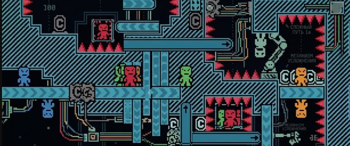
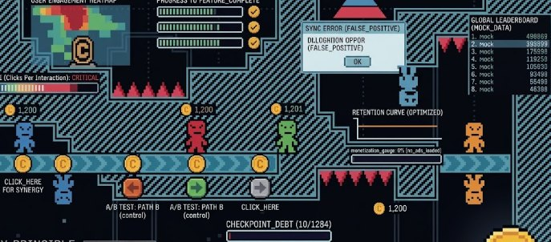
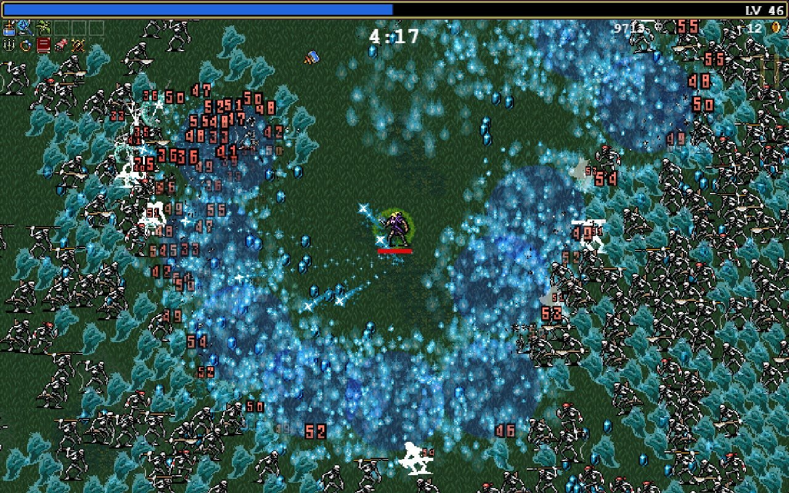
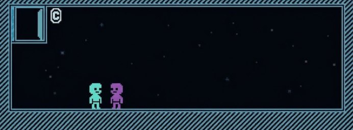
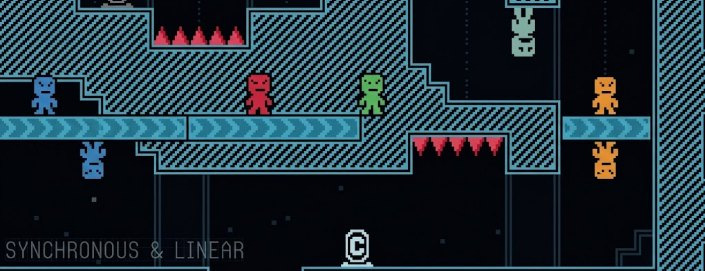
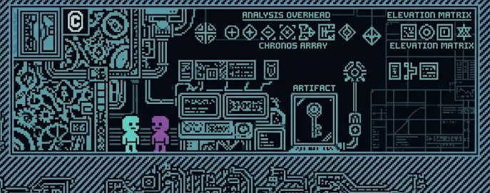
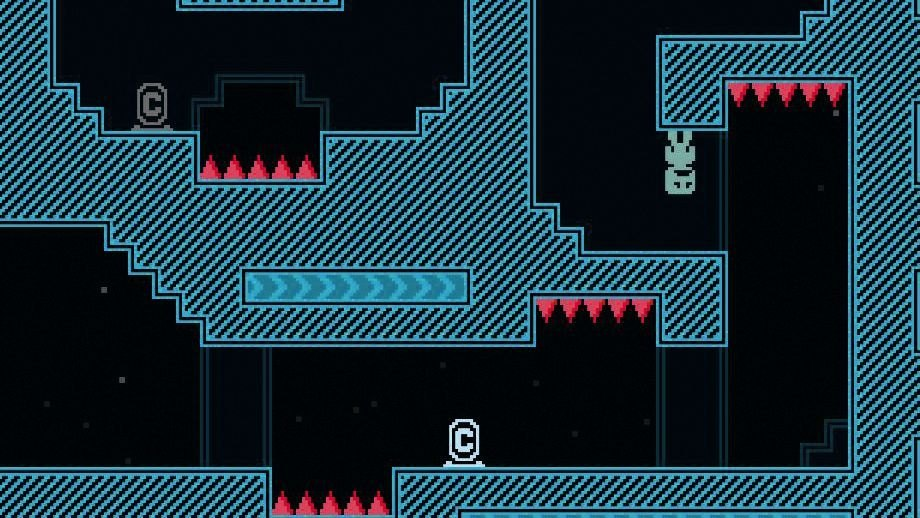

Lo sapevate che dentro, a livello di architettura, i giochi possono essere parecchio «sporchi»? Eppure questo non ha impedito loro di vendere milioni di copie, di essere scritti da una sola persona con un framework per giochi da browser, in Lua sopra una libreria da game jam, o addirittura da un ragazzino con la versione gratuita di Unity. Allo stesso tempo conoscete anche il potente motore custom con ECS, job system, renderer proprietario e reflection ovunque, ma il gioco costruito sopra probabilmente giace nel vostro backlog da tre anni, senza che ci abbiate giocato nemmeno un paio d'ore.
Un sei mesi fa mi hanno chiesto, per vecchia amicizia, di dare una mano con lo sviluppo e il lancio di un gioco su Steam. I ragazzi prima si occupavano di petrolio e, messo da parte un bel gruzzolo, hanno deciso, come si suol dire, di lasciare il segno nell'industria. A essere sincero, avevo un po' perso l'abitudine a un codice così «infantile» e a soluzioni così semplici, il che mi ha un po' sorpreso, anche se mi ha riportato coi piedi per terra dall'abbraccio dell'enterprise. Ma premetto subito: un'architettura semplice non è una scusa per il codice scadente, è un modo per scegliere dove esattamente concedersi di essere complessi. Il budget di complessità è finito... prima di tutto dalla dimensione della vostra RAM naturale, e va speso là dove il giocatore lo vedrà.
Partiamo dal fatto che l'ipercomplicazione non è stupidità/pigrizia, ma quasi sempre il frutto di intelligenza e di lavoro fatto in coscienza. Uno ha letto un articolo ben fatto, ha visto un talk solido, ha lavorato in un buono studio e cerca di fare le cose per bene, ma quel «per bene» arriva dal contesto dello sviluppo grande o specializzato, dove ormai non si può fare diversamente e c'è una «cultura della performance» o, se preferite, la «maledizione della scala»... scegliete voi.
I talk sul data-oriented design, sul giusto layout di una struttura nella cache line, che sono appena 64 byte, i discorsi sulle chiamate virtuali e sull'indirezione che ammazzano il branch predictor, è tutto vero... Ma è una verità raccontata da gente che ha sullo schermo centomila entità vive contemporaneamente, sul serio... nel nostro progetto gli uint16 per gli identificatori dell'ECS sono «finiti». E poi c'è un budget di 16 millisecondi per l'intero frame, render, fisica e audio compresi, per tutte queste «centomilamiliardi» di entità (non per tutte bisogna calcolare tutto, ma questo è un altro discorso). I ragazzi invece avevano circa duecento nemici in uno shooter top-down, eppure anche a loro ogni tanto laggava.
Budget del frame a 60 fps: 16.6 ms
200 entità, Update() ingenuo
con chiamata virtuale: ~200 × 50 ns = 0.01 ms
più cache miss su ognuna: ~200 × 200 ns = 0.04 ms
Totale logica di gioco: ~0.05 ms su 16.6 ms
Stesso frame, costi reali:
render e invio comandi: 4–8 ms
fisica: 1–3 ms
pausa GC nel frame sbagliato: 2–15 ms ← ecco dove fa maleCioè potete ottimizzare la vostra logica di venti volte e non guadagnare nemmeno un frame, perché il lag arrivava dalle allocazioni nell'hot loop. Sapete cosa hanno fatto alla fine? Hanno abbassato il target a 30 e, miracolo... i lag sono spariti, perché il motore ha smesso di cercare di far stare un elefante in una scatola di scarpe. Qui ho barato un po': avevano due giorni prima di mostrare il gioco al publisher, e mettersi a cambiare qualcosa nel codice, beh... rischiavi di non andarci proprio, dal publisher.
Il culto cargo delle interfacce

I grandi studi adorano le interfacce, e un qualche IAudioSystem esiste non perché è elegante, anche se lo è davvero, ma perché il motore ha cinque piattaforme e tre backend audio, e quei backend vengono rifiniti durante lo sviluppo; quindi l'interfaccia qui serve a chiamare meno spesso in review la gente del sottosistema audio.
In un team di tre persone con una sola piattaforma target, l'interfaccia avrà una (una sola) implementazione e un mock che nessuno esegue, perché i test non ci sono... eh eh, un altro guaio dei team piccoli. Ma avete comunque pagato per l'astrazione il prezzo pieno di un grande motore senza ottenere nulla di ciò per cui esiste: ne è valsa la pena? E ora andiamo a una conferenza di game dev ad ascoltare il talk intelligente dei ragazzi che scrivono il sottosistema audio e vogliono venderci il loro IAudioSystem
Cosa vede chi ascolta un talk alla GDC:
IWeaponSystem ──► WeaponSystemPS5
├──► WeaponSystemXbox
└──► WeaponSystemPC
(tre piattaforme, tre team, un contratto comune)
Cosa succede in un progetto da tre persone:
IWeaponSystem ──► WeaponSystem
└──► WeaponSystemMock // inutilizzato dal 2023
(un'implementazione, due file di troppo, addio "vai alla definizione")Un amore a parte dei programmatori è scrivere un grande sistema per diecimila oggetti prima ancora di aver capito se nel gioco ci saranno. E se non ci saranno... pazienza, ci siamo presi la scarica di dopamina scrivendo un sistema fighissimo che non serve a nessuno. Scrivere pooling, chunk e un layout SoA è piacevole, perché il compito è formale e alla fine c'è un risultato misurabile, mentre capire perché il vostro gioco è noioso è spiacevole e lì il risultato non si misura. Ed ecco che i programmatori ottimizzano onestamente e con gusto un gioco a cui ancora nessuno gioca... perciò non lasciate fare il gioco ai programmatori: lasciatelo fare al designer di mostri, livelli e meccaniche.
E cosa hanno fatto quelli a cui è riuscita

Luca Galante, sviluppatore di slot machine, all'inizio del 2021 ha mollato un lavoro ben pagato e tranquillo e con il framework HTML5 Phaser (ispirandosi al mobile Magic Survival, se ricordo bene) ha scritto Vampire Survivors. L'accesso anticipato nel dicembre 2021 è diventato una delle grandi hit del decennio, scalzando vari titoli AAA e dando vita a un nuovo genere, e solo nel 2023 il gioco è passato a Unity per prestazioni e multipiattaforma. Cioè prima il gioco ha trovato il suo pubblico su un framework da browser, e poi ci hanno messo sotto uno stack «da grandi».
L'eroe solitario LocalThunk ha passato due anni e mezzo a fare Balatro con il motore Löve (inizialmente come progetto secondario da mettere nel curriculum per una posizione da designer), e a gennaio 2025 il gioco aveva venduto cinque milioni di copie. Löve è Lua più un sottile wrapper su SDL, senza editor, senza scena e senza inspector. I modder che hanno smontato il gioco ci hanno trovato dentro del normale Lua, un mucchio di legno e sostanze di vari colori, funzioni da 2-3 mila righe e un minimo di commenti.
Stardew Valley, Undertale, Minecraft, Unturned, Phasmophobia (XNA, GameMaker, LWJGL, Unity, Unity) e di nuovo una o due persone, nessun motore proprietario, nessun esotismo architetturale, «codice che puzza», in compenso gli autori hanno speso le loro energie sui contenuti e non sull'infrastruttura del codice.
E perché non pensiate che un motore di gioco sia gratis: quando Vampire Survivors è passato da Phaser a Unity, ci è voluto circa un anno di lavoro con un team cresciuto fino a dieci persone. Cioè lo stack semplice costa poco, ma il conto non sparisce nel nulla e dovrete pagarlo quando avrete già soldi e persone, ma dovrete pagarlo. Secondo me è un buon affare, ma è appunto un affare, non un regalo.
Scegliete uno stack noioso

Un motore commerciale già pronto non è una confessione di impotenza creativa, anche se questa opinione è viva e vegeta e viene ripetuta a ogni conferenza, e io stesso, quando guardo l'ennesimo prodotto in Unreal e non riesco a distinguerlo da un altro prodotto giocato una settimana fa, mi viene il vago sospetto che non lo dicano a caso.
Ma lo stack noioso riguarda più la gestione del rischio: Unity, Unreal e Godot hanno già fatto il debug al posto vostro del caricamento degli asset, dell'audio, del supporto ai gamepad, dell'export della build e, cosa ancora più importante per chi punta alle console, hanno backend di piattaforma decenti e un minimo di problemi con la certificazione; Microsoft ha un intero reparto che fa review solo dei giochi in Unity.
E poi... scegliendo il motore di qualcun altro vi accollate anche le decisioni di business di qualcun altro, e se a qualcuno del top management mancano due spiccioli per uno yacht più grande, senza pensarci due volte tirerà fuori l'ennesima idea geniale e all'improvviso vi ritroverete a pagare per le installazioni, le installazioni gratuite dal Play Store... poi certo ci ripensano, ma la fiducia è ormai compromessa e molti diranno «grazie, no». Il prezzo dello stack noioso sta negli anni di sviluppo risparmiati, ma un giorno qualcuno in un consiglio di amministrazione che non è il vostro vorrà una mandria di cinquecento cavalle tutte rosa, e voi dovrete di nuovo farvene una ragione.
Il monolite batte un groviglio di sistemi
Di solito è questo che scatena più indignazione, quando propongo a un team di rinunciare a sottosistemi ramificati. Perché nel codice di gioco una grande classe lineare che fa tante cose spesso conviene più di una composizione di otto piccole entità. Non perché sia scritta meglio, ma perché la logica di gioco cambia, e il costo della modifica diventa più importante del costo di lettura e della bellezza del codice. Quando avrete soldi e fan devoti potrete pensare a bellezza e filosofia; la versione che vi vergognate di mostrare in code review ci sarà comunque, e se vi vergognate di mostrarla in code review, beh... vi vergognerete e basta, di vergogna non è mai morto nessuno, in compenso in mezz'ora la feature che serve è nel gioco.
class GameManager {
Player player;
WaveSpawner spawner;
UpgradeList upgrades;
float runTime;
void Update(float dt) {
runTime += dt;
spawner.SpawnIfNeeded(runTime);
player.Update(dt);
enemies.UpdateAll(dt);
CheckCollisions();
if (player.xp >= nextLevelXp) OpenUpgradeScreen();
hud.Refresh(player, runTime);
}
}Ed ecco com'era all'inizio, fatto «per bene» (EventBus + ServiceLocator + IUpgradeProvider + TimeScaleService), e ogni modifica richiedeva qualche ora. Bisognava capire chi era iscritto a PlayerLevelUp, in che ordine sarebbero scattati gli iscritti, perché TimeScaleService si era già applicato ai proiettili, e aggiungere un quarto servizio perché non succedesse.
Un'astrazione è una scommessa: indovinare l'asse dei cambiamenti con un mese, due o un anno di anticipo. Nel motore, nel rendering, nel caricamento delle risorse lo indovinate, lì gli assi sono noti, ma nella logica di gioco non lo indovinerete quasi mai, soprattutto se il team è piccolo e sta cercando la sua nicchia, e il designer riformula il compito da un'iterazione all'altra. Allora la bella interfaccia diventa un ostacolo da smontare prima e rimontare poi. Però il manager monolitico si trasforma molto facilmente in un singleton globale chiamato da cento punti diversi, e lì sì che le cose si mettono davvero male, ma questa è tutta un'altra storia, e la sistemerete dopo l'uscita del gioco, se la sistemerete...
Sincrono e lineare va benissimo

Event bus, reattività e asincronia nel gameplay vengono venduti sotto lo slogan del «basso accoppiamento». Di solito queste diavolerie le vendono ai ragazzi impegnati a scrivere IAudioSystem, che hanno un annetto di margine per digerirle e introdurle, mentre l'indie con l'acquisto si porta a casa soltanto l'impossibilità di leggere dal codice l'ordine di esecuzione del frame. Il bug classico qui è che il danno viene applicato dopo che la UI ha aggiornato la barra della vita, quindi il giocatore per un po' vede il valore vecchio, e su hardware debole lo vede ancora più a lungo; bug e dipendenze del genere diventano sempre di più, e vi serve una persona dedicata solo a sorvegliare i sistemi asincroni.
// noioso, ma l'intero frame ti sta in testa
void Tick(float dt) {
input.Poll();
player.Move(dt);
enemies.Move(dt);
physics.Step(dt);
combat.ResolveDamage(); // il danno si calcola qui e solo qui
world.RemoveDead();
hud.Refresh(); // la UI vede sempre lo stato finale
}Nella versione a eventi, invece, l'ordine dipende da chi è riuscito a iscriversi e quando, e questo a sua volta dipende dall'ordine di caricamento della scena, che cambia quando aggiungete un prefab o un sistema. Ma nel momento in cui vi serve configurare l'ordine di esecuzione degli script, avete già perso il controllo del frame, e ora tocca negoziare con i vari sistemi, inventare intermediari, creare entità fittizie. Ricordatevi solo che un Tick esplicito nella maggior parte dei casi costa meno di qualsiasi configurazione.
Tutto ha un prezzo, e il Tick lineare cresce insieme al gioco, arrivando a un certo punto a duecento chiamate, metà delle quali condizionali. È sgradevole, ma si legge dall'alto in basso in un minuto, a differenza del grafo delle iscrizioni, che si legge solo nel debugger e solo per una specifica esecuzione.
Complessità fasulla

Tutto quanto detto sopra ha senso solo se le energie liberate finiscono nel gioco stesso, il che per fortuna è quasi sempre vero: le forze degli sviluppatori vanno in meccaniche più interessanti e in un gameplay «succoso», quello che nei talk chiamano juice. In realtà si tratta di una decina di trucchi economici come lo screen shake, l'hit stop, il giusto scaling, le particelle, un suono dedicato per ogni evento. Nessuno di questi trucchi richiede architettura o sistemi tecnici complessi... ma tutti richiedono tempo per trovare i numeri giusti e test ponderati su un giocatore in carne e ossa.
Un sistema complesso con un pool da diecimila unità, invece, richiederà profiling e un pensiero ingegneristico fuori dal comune, ma non inciderà affatto sugli fps del gioco, perché gli fps sono una grandezza non lineare: scendere da 120 a 90 vi costa 2.8 ms, mentre scendere da 30 a 25 costa 6.7 ms. In realtà sono proprio grandezze diverse, e i vostri 0.2 ms guadagnati daranno un'ottimizzazione inferiore all'uno per cento degli fps e occuperanno il cinque per cento del codice, perché la vostra intuizione sui punti caldi aveva sbagliato già prima di lanciare il profiler.
Dove la complessità è giustificata è nei sistemi di build e di test: build automatica e riproducibile, test automatici, rispetto dei requisiti di piattaforma, che per Sony, Microsoft e Nintendo sono diversi. Tutto questo è noioso, non si vede nel trailer, non lo vedono programmatori e designer, ma è il lavoro che separa «abbiamo fatto un gioco» da «il gioco è uscito». Potete fare un gioco ma non riuscire a pubblicarlo in tempo, o beccarvi le penali del publisher, bocciati alla certificazione per una gestione sbagliata della disconnessione del gamepad. Ammettetelo, è molto più frustrante che non aver scritto la vostra ECS.
Dove l'architettura semplice si rompe
Sarebbe disonesto chiudere dicendo che basta scrivere in modo più semplice e andrà tutto bene. Non andrà così, perché anche la semplicità ha i suoi problemi, e se conviverci o no lo sceglie ognuno per sé.
Il codice semplice col tempo diventa una palude per mancanza di confini. E anche un set minimo di confini ripaga sempre e ovunque, e costa praticamente nulla: i dati del gioco separati dalla logica di gioco, la logica separata dalla presentazione, e la presentazione separata dall'interfaccia utente. Vi ritrovate con zero interfacce, ma non potete più cambiare per sbaglio la vita del giocatore dal gestore del click di un pulsante.
E poi i salvataggi... questo è forse l'unico punto in cui sono pronto a difendere la progettazione anticipata, perché qui sarete obbligati a garantire la retrocompatibilità, e senza una buona architettura non la si fa per bene. E dovrete farla in ogni caso, perché un giocatore che ha speso quaranta ore e ha perso il salvataggio... a dir poco, può buttarne parecchia nel ventilatore, e se di giocatori così non ce n'è uno, e nemmeno cento?
Tutto il resto può essere rozzo quanto vi permette la coscienza. Chiedete all'autore di un giochino davvero intrigante, VVVVVV: il gioco è ottimo, ma anche lui è fatto di sostanze e pezzi di legno. (github.com/TerryCavanagh/VVVVVV/blob/master/desktop_version/src/Logic.cpp)

L'architettura è uno strumento
Il gioco in quanto codice esiste solo nella vostra testa. Il giocatore non aprirà il repository e non saprà se avevate un'ECS, se usavate un'interfaccia dall'odore sospetto o quanto spesso avete torturato GameManager nel rendering. Il tempo dello sviluppatore è limitato e va speso non sulla complessità ma su ciò che si vede sullo schermo, sapendo che ogni bella soluzione ingegneristica ha il suo prezzo. Avete mai visto una recensione su Steam del tipo «Gameplay ottimo, grafica stupenda, ma per il singleton nel game loop gli do due Meyers su dieci»? Nemmeno io...